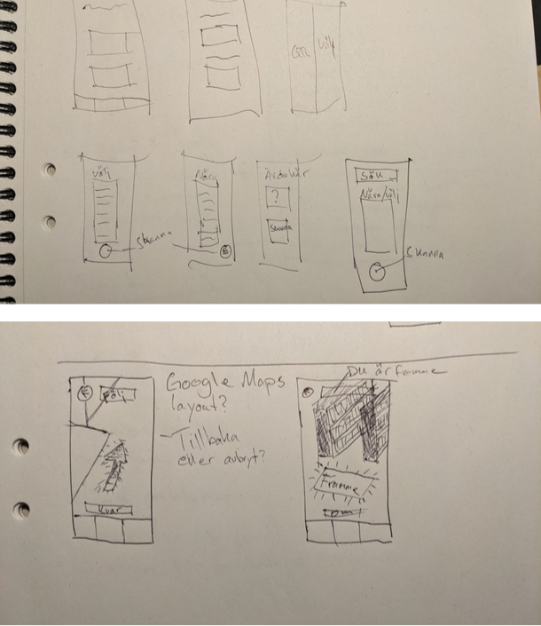
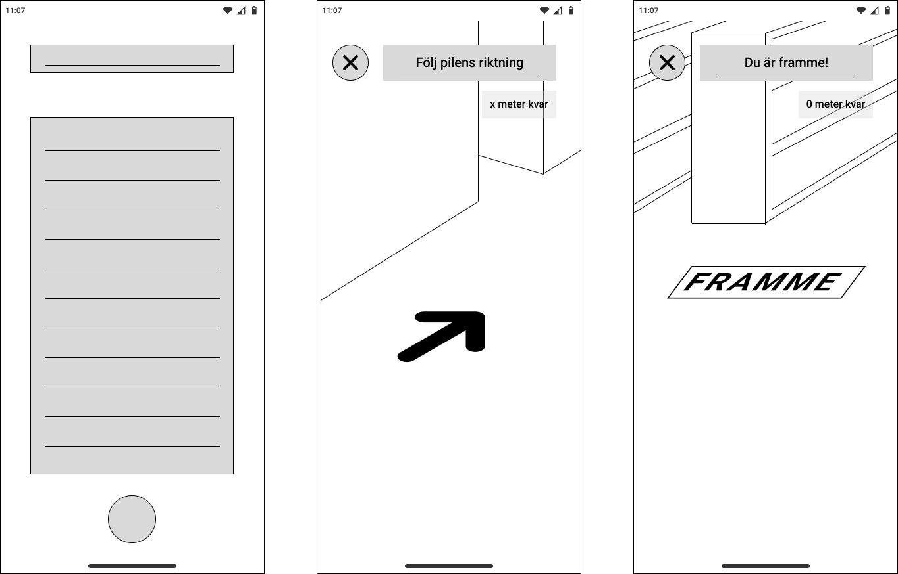
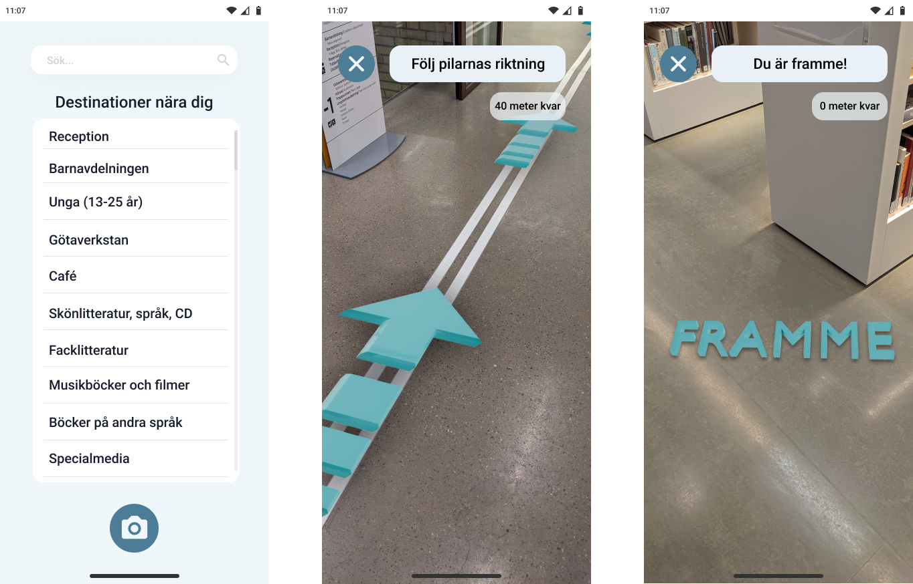

Large spaces shouldn't require a map
Navigating large public spaces like libraries is challenging for people with cognitive disabilities. This project explored how AR guidance - delivered through a user's smartphone camera - could make independent navigation feel calm and achievable, without relying on static signage or asking for help.
When the environment itself creates friction
Standard library navigation assumes a baseline of spatial literacy - reading floor plans, interpreting signage, remembering routes. For users with ADHD, autism, or other cognitive differences, those assumptions break down quickly.
Built-in signage was rarely consistent across sections. Text-heavy information systems added cognitive overhead rather than reducing it. And needing to ask staff for help introduced a social barrier that many users actively avoided - leaving them stranded.
A map of the problem, not a feed of assumptions
I conducted two semi-structured user interviews — one with a person with ADHD, focused specifically on navigating libraries, and one with a person with dyslexia, covering public spaces more broadly. These ran alongside a literature review grounding the project in existing research on wayfinding, AR, and cognitive accessibility.
From insight to concept
I followed a User-Centred Design approach - moving from research through ideation, prototyping, and testing with real users. Each phase fed directly into the next, keeping the design grounded in what users actually needed rather than what seemed technically interesting.

Constraints that kept the design honest
Based on my research, I defined a focused set of requirements aimed at minimising cognitive load, maximising visual clarity, and reducing interaction demand to the absolute minimum.
From sketch to screen
The design moved from rough sketches through low-fidelity wireframes to a functional interactive prototype. Each step narrowed the decisions - how much UI to show in AR view, where to place the cancel button, what "arrival" should feel like.

Built in Figma and Bezi, tested in a real library
The prototype was built in Figma for the UI and Bezi - a browser-based 3D tool - for the AR layer. Because Bezi can't be embedded directly in Figma, the navigation flow leads the user out to a browser where Bezi opens through the phone's camera. It was tested at Stadsbiblioteket i Göteborg, navigating to the Musikböcker och filmer section.

Seeing it in space
The video below shows the prototype in use - the teal arrow anchored to the library floor, the distance counter updating in real time, and the "FRAMME" arrival state triggering when the user reaches their destination.
What the prototype confirmed
The test was conducted with one participant — the same person with ADHD who took part in the research interview. The task was simple: navigate from a fixed starting point to the Musikböcker och filmer section using only the AR guidance.
Designed to reduce friction, not add novelty
AR technology has significant potential to improve cognitive accessibility in public spaces - but only when the design resists the temptation to show off what the technology can do. This project was a study in restraint: one arrow, one instruction, one clear destination.
Future directions would explore multi-floor navigation, personalised destination memory, and accessibility features for users with visual impairments as a natural extension of the same system.